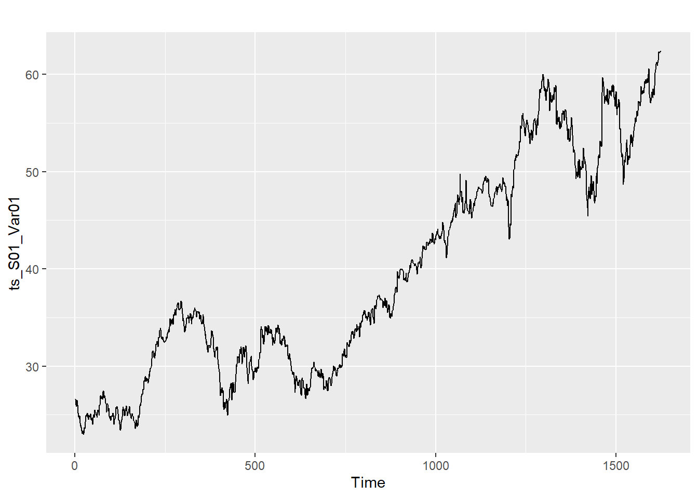
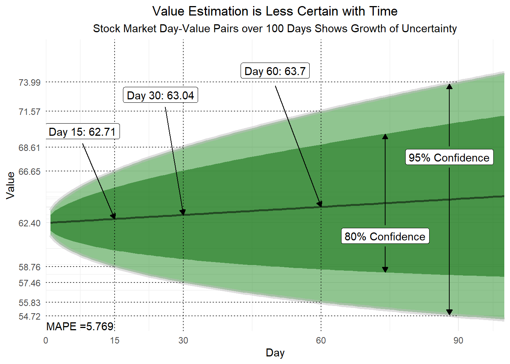

Code
# Data source
data <- read.csv("https://raw.githubusercontent.com/palmorezm/msds/main/Predictive%20Analytics/Projects/Project1/project1data.csv")
# data <- data %>%
# rename(SeriesInd = ï..SeriesInd)
head(data, 5)A good forecast is a blessing while the wrong forecast could prove to be dangerous
Given an unknown data source with several groups, we attempt to predict the next 140 values of a times series data set based on 1622 entries provided on multiple events. Our predictions will be fine-tuned to reduce the mean absolute percentage error (MAPE) as much as possible. The packages we will be using and all associated code to produce the models can be found in the attached markdown file. The data with its first five rows, are shown below.
# Data source
data <- read.csv("https://raw.githubusercontent.com/palmorezm/msds/main/Predictive%20Analytics/Projects/Project1/project1data.csv")
# data <- data %>%
# rename(SeriesInd = ï..SeriesInd)
head(data, 5)We create forecasts for two preselected variables within each of six predetermined groups. These groups are denoted S01, S02, S03, S04, S05, and S06 respectively. There are five variables within each group that we have to work with. They are Var01, Var02, Var03, Var05, and Var07 respectively. Our date variable ‘SeriesInd,’ is displayed in its numeric serial number form calculated with Excel. Although we do not know what the variables stand for, we can develop models to try and forecast their behavior. This chart contains a breakdown of which variables are forecast in each group.
# Chart
varsbygroup <- data.frame(matrix(c("S01", "S02", "S03",
"S04", "S05", "S06",
"Var01", "Var02", "Var05",
"Var01", "Var02", "Var05",
"Var02", "Var03", "Var07",
"Var02", "Var03", "Var07"),
nrow = 6, ncol=3))
colnames(varsbygroup) <- c("Group", "Variable1", "Variable2")
varsbygroup %>%
kbl(booktabs = T) %>%
kable_styling(latex_options = c("striped", "HOLD_position", "scale_down"), full_width = T)| Group | Variable1 | Variable2 |
|---|---|---|
| S01 | Var01 | Var02 |
| S02 | Var02 | Var03 |
| S03 | Var05 | Var07 |
| S04 | Var01 | Var02 |
| S05 | Var02 | Var03 |
| S06 | Var05 | Var07 |
# Grouping
S01 <- data %>%
filter(group == "S01")
S02 <- data %>%
filter(group == "S02")
S03 <- data %>%
filter(group == "S03")
S04 <- data %>%
filter(group == "S04")
S05 <- data %>%
filter(group == "S05")
S06 <- data %>%
filter(group == "S06")
# Imputation by function - missing something? lapply/sapply may work
soximp <- function(df){
for (i in colnames(df)){
if (sum(is.na(df[[i]])) !=0){
df[[i]][is.na(df[[i]])] <- median(df[[i]], na.rm=TRUE)
}
}
}
# Imputation loops for each group by median
for (i in colnames(S01)){
if (sum(is.na(S01[[i]])) != 0){
S01[[i]][is.na(S01[[i]])] <- median(S01[[i]], na.rm = TRUE)
}
}
for (i in colnames(S02)){
if (sum(is.na(S02[[i]])) != 0){
S02[[i]][is.na(S02[[i]])] <- median(S02[[i]], na.rm = TRUE)
}
}
for (i in colnames(S03)){
if (sum(is.na(S03[[i]])) != 0){
S03[[i]][is.na(S03[[i]])] <- median(S03[[i]], na.rm = TRUE)
}
}
for (i in colnames(S04)){
if (sum(is.na(S04[[i]])) != 0){
S04[[i]][is.na(S04[[i]])] <- median(S04[[i]], na.rm = TRUE)
}
}
for (i in colnames(S05)){
if (sum(is.na(S05[[i]])) != 0){
S05[[i]][is.na(S05[[i]])] <- median(S05[[i]], na.rm = TRUE)
}
}
for (i in colnames(S06)){
if (sum(is.na(S06[[i]])) != 0){
S06[[i]][is.na(S06[[i]])] <- median(S06[[i]], na.rm = TRUE)
}
}Before we begin, the data is filtered to extract each time series by group. This isolates the Var01, Var02, Var03, Var05, and Var07 variables associated with groups S01, S02, and so on. Then, with each group and its respective variables’ behavior isolated, we clean and adjust the data to make use of it in the analysis. Once we determine the most appropriate models to forecast the proper variable in each group, we evaluate the results of our predictions. Our final forecasts are captured in the excel spreadsheet attached.
We began by addressing missing values. Given 10,572 observations, about 8% of each variable was missing. Several methods were tried to address this but the best were Kalman smoothing and simple imputation by the median of each ‘Var0X’ variable to fill in where appropriate. The ‘SeriesInd’ numeric date was also converted from its serial number form to a common date-time series. We then examined each group’s variables separately.
# library(fpp2)
#S01
S01<-subset(data, group == "S01", select = c(SeriesInd, Var01, Var02))%>%
mutate(date=as.Date(SeriesInd, origin = "1905-01-01"))
summary(S01) SeriesInd Var01 Var02 date
Min. :40669 Min. :23.01 Min. : 1339900 Min. :2016-05-07
1st Qu.:41304 1st Qu.:29.85 1st Qu.: 5347550 1st Qu.:2018-01-31
Median :41946 Median :35.66 Median : 7895050 Median :2019-11-05
Mean :41945 Mean :39.41 Mean : 8907092 Mean :2019-11-03
3rd Qu.:42586 3rd Qu.:48.70 3rd Qu.:11321675 3rd Qu.:2021-08-06
Max. :43221 Max. :62.31 Max. :48477500 Max. :2023-05-03
NA's :142 NA's :140 # Subset Var01 and Var02 from S01.
S01_Var01<-S01 %>%select(Var01)
S01_Var01<-S01_Var01[1:1625,]
S01_Var02<-S01 %>%select(Var02)
S01_Var02<-S01_Var02[1:1625,]
#S02
S02<-subset(data, group == "S02", select = c(SeriesInd, Var02, Var03))%>%
mutate(date=as.Date(SeriesInd, origin = "1905-01-01"))
summary(S02) SeriesInd Var02 Var03 date
Min. :40669 Min. : 7128800 Min. : 8.82 Min. :2016-05-07
1st Qu.:41304 1st Qu.: 27880300 1st Qu.:11.82 1st Qu.:2018-01-31
Median :41946 Median : 39767500 Median :13.76 Median :2019-11-05
Mean :41945 Mean : 50633098 Mean :13.68 Mean :2019-11-03
3rd Qu.:42586 3rd Qu.: 59050900 3rd Qu.:15.52 3rd Qu.:2021-08-06
Max. :43221 Max. :480879500 Max. :38.28 Max. :2023-05-03
NA's :140 NA's :144 # Subset Var02 and Var03 from S02.
S02_Var02<-S02 %>%select(Var02)
S02_Var02<-S02_Var02[1:1625,]
S02_Var03<-S02 %>%select(Var03)
S02_Var03<-S02_Var03[1:1625,]
#S03
S03<-subset(data, group == "S03", select = c(SeriesInd, Var05, Var07))%>%
mutate(date=as.Date(SeriesInd, origin = "1905-01-01"))
summary(S03) SeriesInd Var05 Var07 date
Min. :40669 Min. : 27.48 Min. : 27.44 Min. :2016-05-07
1st Qu.:41304 1st Qu.: 53.30 1st Qu.: 53.46 1st Qu.:2018-01-31
Median :41946 Median : 75.59 Median : 75.71 Median :2019-11-05
Mean :41945 Mean : 76.90 Mean : 76.87 Mean :2019-11-03
3rd Qu.:42586 3rd Qu.: 98.55 3rd Qu.: 98.61 3rd Qu.:2021-08-06
Max. :43221 Max. :134.46 Max. :133.00 Max. :2023-05-03
NA's :144 NA's :144 # Subset Var05 and Var07 from S03.
S03_Var05<-S03 %>%select(Var05)
S03_Var05<-S03_Var05[1:1625,]
S03_Var07<-S03 %>%select(Var07)
S03_Var07<-S03_Var07[1:1625,]Statistical summaries, box plots, and histograms were run on each group to evaluate where the average value of each variable was, if its distribution was skewed, determine whether outliers were present, and provide other descriptors of the data. These informed us that the average value (mean) of the variables are similar but their range varies widely with Var05 at 186.01 while Var02 covers a range of 479 million. Our analysis solves this potential problem by focusing on variables of the same scales as the intended target.
summary(S01_Var01) Min. 1st Qu. Median Mean 3rd Qu. Max.
23.01 29.85 35.72 39.47 48.76 62.38 par(mfrow = c(1,2))
hist(ts_S01_Var01)
boxplot(ts_S01_Var01)
autoplot(ts_S01_Var01)
Additionally, all but group S03 of the histograms exhibited right skewness, and Var02 and Var03 had outliers. These were replaced using Friedman’s super smoothing method. Due to the randomness of these variables, determining outliers was difficult and there is a presence of additional overly influential points as determined using Cook’s distance formula. We acknowledge the presence of these points but are unable to alter them as they are likely intentional based on the patterns in the data. For reference, the observations are shown in the scatter plot with color coding by each group.
data[c(1:7)]%>%
gather(variable, value, -SeriesInd, -group) %>%
ggplot(., aes(value, SeriesInd, color = group)) +
geom_point(fill = "white",
size=1,
shape=21,
alpha = 0.75) +
coord_flip() +
facet_wrap(~variable,
scales ="free") +
labs(title = "Variable Patterns",
subtitle = "Color Coded by Group",
x="Value",
y="Time",
caption = "Contains all non-null observations of the given data set") +
theme_minimal() +
theme(plot.title = element_text(hjust=0.5),
plot.subtitle = element_text(hjust=0.5),
legend.position = "bottom",
axis.ticks.x=element_blank(),
axis.text.x=element_blank(),
plot.caption = element_text(hjust=0.5)
)
Seasonality was also considered. It is possible this data follows a weak seasonal trend that increases during summer months but there is not a lot of evidence to support regular fluctuations. Regular gaps were noticed in the time series on a weekly basis and several methods were used in attempts to fix this. However, the data appears randomly distributed and as such, acts randomly. For this reason, we left the gaps alone and any further adjustments made were minimal to avoid disturbing any existing patterns in the data.
We determined that the best model type was an Auto Regressive Integrated Moving Average (ARIMA) with drift. Unfortunately, all variables required differencing to achieve stationarity. This indicates that any predictions made with these variables may be unrealistic because of inherent random changes in statistics like the mean and variance of these variables over time. We transform the data in our attempts to achieve stationarity but it should be noted that our review of stationarity is only a rough estimate using the aforementioned summary statistics so that we may apply this ARIMA method. Otherwise, we would have to conclude this data is inherently unpredictable and as such, render model forecasts useless. Rather, we focus on forecasting each variable individually and try to keep it simple.
fcast0101 %>%
as.data.frame() %>%
ggplot(aes(x = seq(1:length(`Hi 95`)))) +
geom_ribbon(aes(ymin=`Lo 95`,ymax=`Hi 95`), fill="forest green", alpha=0.5) +
geom_ribbon(aes(ymin=`Lo 80`,ymax=`Hi 80`), fill="dark green", alpha=0.5) +
geom_line(aes(y = `Hi 95`), color = "grey", size=2, alpha = .5) +
geom_line(aes(y = `Point Forecast`), color = "#000000", size=1, lty = 1, alpha = .5) +
geom_line(aes(y = `Lo 95`), color = "grey", size=2, alpha = .5) +
geom_vline(xintercept = b1, lty = 3) +
geom_vline(xintercept = b2, lty = 3) +
geom_vline(xintercept = b3, lty = 3) +
geom_segment(aes(x = 0, y = extract[which(extract$Day == b1),]$`Hi 95`,
xend = b1, yend = extract[which(extract$Day == b1),]$`Hi 95`), lty = 3) +
geom_segment(aes(x = 0, y = extract[which(extract$Day == b1),]$`Lo 95`,
xend = b1, yend = extract[which(extract$Day == b1),]$`Lo 95`), lty = 3) +
geom_segment(aes(x = 0, y = extract[which(extract$Day == b2),]$`Hi 95`,
xend = b2, yend = extract[which(extract$Day == b2),]$`Hi 95`), lty = 3) +
geom_segment(aes(x = 0, y = extract[which(extract$Day == b2),]$`Lo 95`,
xend = b2, yend = extract[which(extract$Day == b2),]$`Lo 95`), lty = 3) +
geom_segment(aes(x = 0, y = extract[which(extract$Day == b3),]$`Hi 95`,
xend = b3, yend = extract[which(extract$Day == b3),]$`Hi 95`), lty = 3) +
geom_segment(aes(x = 0, y = extract[which(extract$Day == b3),]$`Lo 95`,
xend = b3, yend = extract[which(extract$Day == b3),]$`Lo 95`), lty = 3) +
geom_segment(aes(x = 0, y = extract[which(extract$Day == b4),]$`Hi 95`,
xend = b4, yend = extract[which(extract$Day == b4),]$`Hi 95`), lty = 3) +
geom_segment(aes(x = 0, y = extract[which(extract$Day == b4),]$`Lo 95`,
xend = b4, yend = extract[which(extract$Day == b4),]$`Lo 95`), lty = 3) +
scale_x_continuous(expand = c(0, 0),
limits=c(0,100),
breaks = c(0, b1, b2, b3, b4)) +
scale_y_continuous(expand = c(0, 0),
limits=c(min(fcast0101$lower), max(fcast0101$upper)),
breaks = c(round(fcast0101$mean[[1]], digits = 2),
round(extract[which(extract$Day == b1),]$`Hi 95`, 2),
round(extract[which(extract$Day == b1),]$`Lo 95`, 2),
round(extract[which(extract$Day == b2),]$`Hi 95`, 2),
round(extract[which(extract$Day == b2),]$`Lo 95`, 2),
round(extract[which(extract$Day == b3),]$`Hi 95`, 2),
round(extract[which(extract$Day == b3),]$`Lo 95`, 2),
round(extract[which(extract$Day == b4),]$`Hi 95`, 2),
round(extract[which(extract$Day == b4),]$`Lo 95`, 2))) +
annotate("text", x = 7.5, y =53.9, label = paste0("MAPE =", signif(mape0101, 4))) +
annotate("label",x=txtx90,y=extract[which(extract$Day == txtx90),]$`Point Forecast` + 3.50,
label = "95% Confidence" ) +
annotate("segment", x = txtx90, y = mean(extract$`Point Forecast`) + 4.75,
xend = txtx90,
yend = extract[which(extract$Day == txtx90),]$`Hi 95`,
arrow = arrow(type = "closed", length = unit(0.02, "npc"))) +
annotate("segment", x = txtx90, y = mean(extract$`Point Forecast`) + 3,
xend = txtx90,
yend = extract[which(extract$Day == txtx90),]$`Lo 95`,
arrow = arrow(type = "closed", length = unit(0.02, "npc"))) +
annotate("label",x=txtx80, y=extract[which(extract$Day == txtx90),]$`Point Forecast` - 3.01,
label = "80% Confidence" ) +
annotate("segment", x = txtx80, y = mean(extract$`Point Forecast`) - 1.75,
xend = txtx80,
yend = extract[which(extract$Day == txtx80),]$`Hi 80`,
arrow = arrow(type = "closed", length = unit(0.02, "npc"))) +
annotate("segment", x = txtx80, y = mean(extract$`Point Forecast`) -3.5,
xend = txtx80,
yend = extract[which(extract$Day == txtx80),]$`Lo 80`,
arrow = arrow(type = "closed", length = unit(0.02, "npc"))) +
annotate("label",x=b1 - 7.05, y=mean(extract$`Point Forecast`) + 6,
label = paste("Day 15:", signif(extract[which(extract$Day == b1),]$`Point Forecast`, 4))) +
annotate("segment", x = b1 - 7, y = mean(extract$`Point Forecast`) + 5,
yend = extract[which(extract$Day == b1),]$`Point Forecast`,
xend = b1,
arrow = arrow(type = "closed", length = unit(0.02, "npc"))) +
annotate("label",x=b2 - 5, y=mean(extract$`Point Forecast`) + 9,
label = paste("Day 30:", signif(extract[which(extract$Day == b2),]$`Point Forecast`, 4))) +
annotate("segment", x = b2 - 4, y = mean(extract$`Point Forecast`) + 8.0,
yend = extract[which(extract$Day == b2),]$`Point Forecast`,
xend = b2,
arrow = arrow(type = "closed", length = unit(0.02, "npc"))) +
annotate("label",x=b3 - 10, y=mean(extract$`Point Forecast`) + 11,
label = paste("Day 60:", signif(extract[which(extract$Day == b3),]$`Point Forecast`, 4))) +
annotate("segment", x = b3 - 10, y = mean(extract$`Point Forecast`) + 9.75,
yend = extract[which(extract$Day == b3),]$`Point Forecast`,
xend = b3,
arrow = arrow(type = "closed", length = unit(0.02, "npc"))) +
labs(x = "Day", y = "Value",
title = "Value Estimation is Less Certain with Time",
subtitle = "Stock Market Day-Value Pairs over 100 Days Shows Growth of Uncertainty") +
theme_minimal() + theme(plot.title = element_text(hjust = 0.5),
plot.subtitle = element_text(hjust = 0.5))